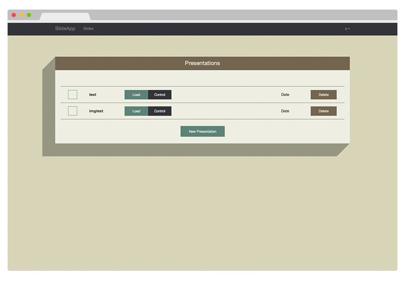
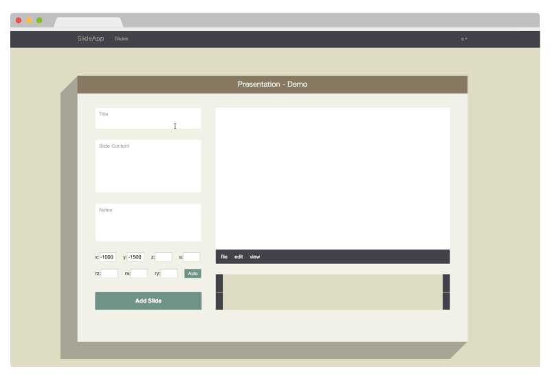
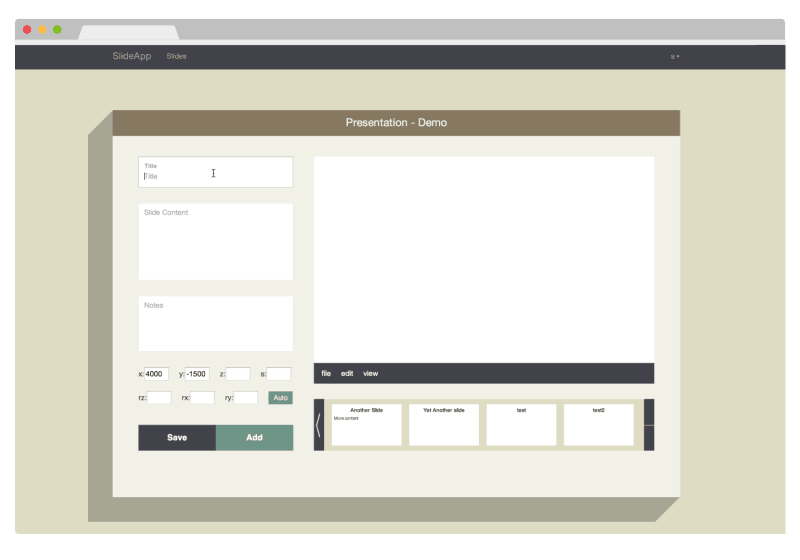
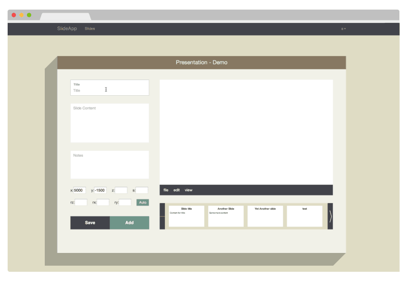

SlideApp (slideapp.net) is a webapp I started as a solo side-project over the 2013 winter break. I wanted to both try and create something that could potentially be used and to become more familiar with the full web stack. The project allows a user to create and then present slideshows using a remote without having to install any software of perform any preliminary setup.
All the user has to do is log into as many presentation machines as he would like, then log into his own phone (they don't need to be on the same network), select his presentation, and hit launch. From there, all the other machines will automatically load thhe presentation and able to be controlled from the remote.
SlideApp uses MongoDB for its database, Express.js and Node.js for the backend, and Angular.js for the frontend. The presentations use Impress.js (support for other slidesow libraries will be added soon) as well as Socket.io.
You can try out a demo without even having to register at slideapp.net
However, SlideApp is currently still more alpha than an angry silverback gorilla and is currently hosted on a fairly cheap VPS, so the experience may not be a smooth if multiple people are using it at the same time.
Controlling slideshows is hopefully self explanatory (try out the demo above), but creating slides is a bit less clear. I am going to probably build out a better canvas-based way of creating slides that should be more intuitive. In the meantime, here are instructions on how to use the interface for creating slides.
To create a new presentation, just log in and hit the "New Presentation" button.
You will then be presented with the slide creation interface. While there, simply fill out the forms for Title, Content, and Notes and see a preview of how it will look on the right. After you have added the content, just hit the Add button. You will notice the button will change to have an additional Save button. If the Save button is not present, that means there are no changes to save.
Users can edit previous slides by clicking on its thumbnail. You will notice the button on the bottom changes once again. To save your changes to the slide, just hit Edit, otherwise hit cancel.
After editing slides, you can just go back to simply adding slides to the end (ability to insert slides in between is will be added later).
Will be adding more info here shortly as well as possibly some wireframes if Ii am able to get access to a scanner.